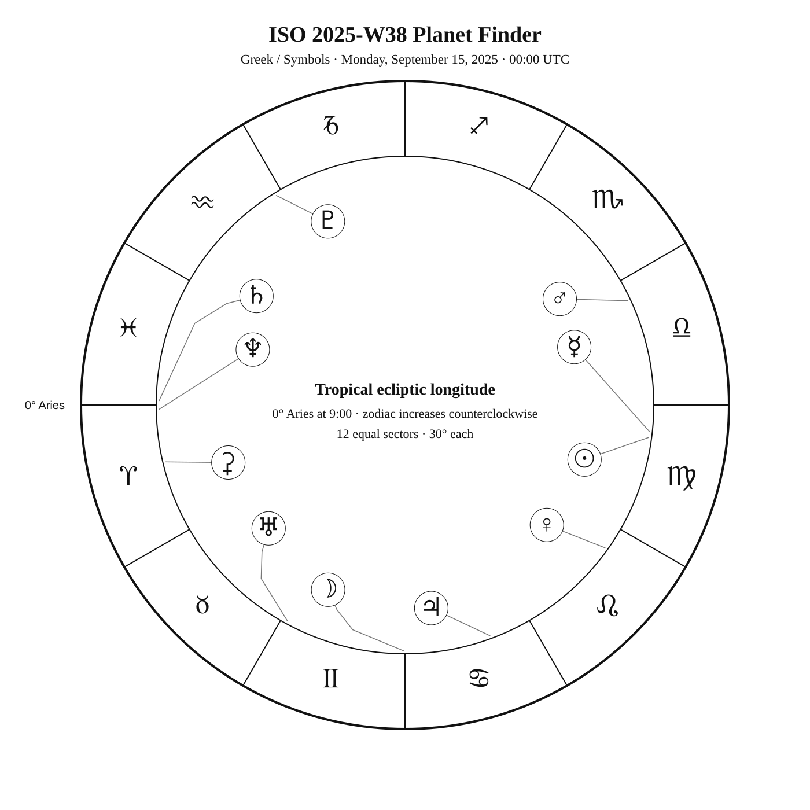
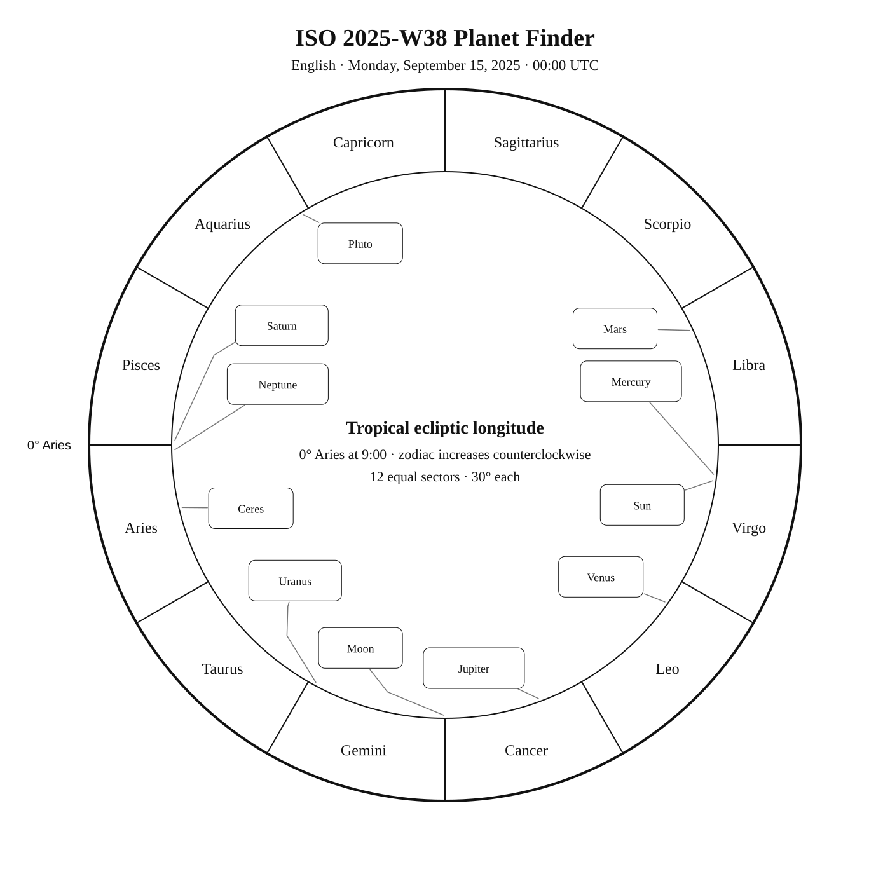
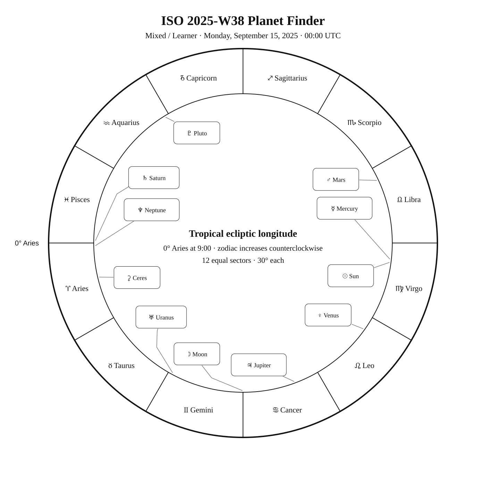

ISO 2025-W38
Week begins: Monday, September 15, 2025
Calendar
| Date | Zodiac day | Events |
|---|---|---|
| Mon, Sep 15, 2025 | ♍ 25 | Finest NGC 107 / NGC 6939 · Collinder 423 —  10 10.1 — Northern Summer 10 10.1 — Northern Summer |
| Tue, Sep 16, 2025 | ♍ 26 | C47 / NGC 6934 — 9 8.9 — Tropical SummerFinest NGC 106 / NGC 6940 · Collinder 424 — 7 7.2 — Northern SummerC12 / NGC 6946 / Finest NGC 108 / NGC 6946 · Fireworks Galaxy; Arp 29 — 10 9.7 — Northern Summer |
| Wed, Sep 17, 2025 | ♍ 27 | Rotanev (β Del) —  4 3.6 — Tropical Summer 4 3.6 — Tropical Summerα Ind —  3 3.1 — Southern Summer 3 3.1 — Southern SummerSualocin (α Del) — 4 3.8 — Tropical Summer |
| Thu, Sep 18, 2025 | ♍ 28 | Deneb (α Cyg) / Deneb (α Cygni) — Var 1 1.3 1.2–1.3 — Northern Summer — in the Milky Way |
| Fri, Sep 19, 2025 | ♍ 29 | β Pav — 3 3.4 — Southern SummerC34 / NGC 6960 · Western Veil Nebula / Finest NGC 99b / NGC 6960 · Veil Nebula (West) — — Northern SummerAljanah (ε Cyg) — 2 2.5 — Northern Summer |
| Sat, Sep 20, 2025 | ♍ 30 | α Mic — 5 4.9 — Southern Summer |
| Sun, Sep 21, 2025 | ♍ 31 | 🌑 New Moon — 19:54:08 UTC β Mic — 6 6.1 — Southern SummerM72 — 9 9.3 — Tropical Summerβ Ind — 4 3.7 — Southern Summer |
Weekly Solar-System Ephemeris
Snapshot: Week begins September 15, 2025, 00:00 UTC.
(-90° to +90°; defaults +45°, 21:00 LAT)
| Body | ☉︎ | ☽︎ | ☿︎ | ♀︎ | ♂︎ | ♃︎ | ♄︎ |
|---|---|---|---|---|---|---|---|
| Ecliptic | ♍︎ 22°25′ β +0°00′ | ♊︎ 29°42′ β +5°11′ | ♍︎ 23°47′ β +1°31′ | ♌︎ 24°29′ β +0°46′ | ♎︎ 25°06′ β +0°06′ | ♋︎ 20°14′ β −0°01′ | ♓︎ 29°00′ β −2°30′ |
| Observing |  | -9.9 | ☉︎ | -3.9 | 1.6 | -2.0 | 0.6 |
| Rise | 05:43 | 22:10 | 05:48 | 03:14 | 08:36 | 00:16 | 18:36 |
| Set | 18:17 | 14:43 | 18:27 | 17:18 | 19:26 | 15:34 | 06:20 |
Extended targets:
| Body | ⚳︎ | ♅︎ | ♆︎ | ♇︎ |
|---|---|---|---|---|
| Ecliptic | ♈︎ 13°22′ β −15°04′ | ♊︎ 1°26′ β −0°13′ | ♈︎ 1°00′ β −1°22′ | ♒︎ 1°34′ β −3°47′ |
| Observing | 7.8 | 5.7 | 7.7 | 14.5 |
| Rise | 20:13 | 20:55 | 18:35 | 16:26 |
| Set | 07:08 | 11:55 | 06:33 | 01:07 |
β = ecliptic latitude (+ north, − south).
Rise and set are Local Apparent Time for the selected latitude.
Naked-eye observing uses the Sun’s altitude at the selected Monday observer time: Daylight (Sun ≥ −0.833°), Civil twilight (−0.833° to −6°), Nautical twilight (−6° to −12°), Astronomical twilight (−12° to −18°), and Night (below −18°).
Solar Glare identifies a body too close to the Sun when the sky-state rule does not already supersede its naked-eye classification.
The Sun’s observing status uses this same five-state sky classification.
Planet Finder



Sky Notes
Kilroy: Sky Notes · generated 2026-10-23 16:16:46 UTC
ISO 2025-W38 runs from September 15 through September 21. Mars is about 1.3° in ecliptic longitude from Spica in Virgo. Saturn and Neptune are separated by about 2.0° in geocentric ecliptic longitude at the Monday 00:00 UTC snapshot.


Naked eye: 🌑 New Moon — 19:54:08 UTC. The dark Moon favors faint targets and extended star fields. Use α Ind, Deneb, β Pav, Aljanah as the week’s fixed-sky framework.

Planets: Moon: Naked eye; magnitude -9.9; direct motion; 43.8% illuminated. Below the horizon at 21:00 local apparent solar time, 45°N. Monday 00:00 UTC snapshot. Solar conjunction in ecliptic longitude Sep 21 19:54 UTC. Conjunction with Venus in ecliptic longitude Sep 19 12:21 UTC. Conjunction with Jupiter in ecliptic longitude Sep 16 12:18 UTC. Mercury: In solar glare; magnitude -1.6; direct motion; 99.8% illuminated. Monday 00:00 UTC snapshot. Venus: Naked eye; magnitude -3.9; direct motion; 87.8% illuminated. Below the horizon at 21:00 local apparent solar time, 45°N. Monday 00:00 UTC snapshot. Conjunction with Moon in ecliptic longitude Sep 19 12:21 UTC. Mars: Naked eye; magnitude 1.6; direct motion; 96.9% illuminated. Below the horizon at 21:00 local apparent solar time, 45°N. Monday 00:00 UTC snapshot. Ceres: Telescope; magnitude 7.8; retrograde motion; 99.5% illuminated. Monday 00:00 UTC snapshot. Jupiter: Naked eye; magnitude -2.0; direct motion; 99.3% illuminated. Below the horizon at 21:00 local apparent solar time, 45°N. Monday 00:00 UTC snapshot. Conjunction with Moon in ecliptic longitude Sep 16 12:18 UTC. Saturn: Naked eye; magnitude 0.6; retrograde motion; 100.0% illuminated. Monday 00:00 UTC snapshot. Opposition in ecliptic longitude Sep 21 05:45 UTC. Uranus: Binoculars; magnitude 5.7; retrograde motion; 99.9% illuminated. Monday 00:00 UTC snapshot. Neptune: Telescope; magnitude 7.7; retrograde motion; 100.0% illuminated. Monday 00:00 UTC snapshot. Pluto: Substantial telescope; magnitude 14.5; retrograde motion; 100.0% illuminated. Monday 00:00 UTC snapshot.


Binoculars: Trace Delphinus’s charted figure in the finder, then identify Rotanev at its charted position. Trace Delphinus’s charted figure in the finder, then identify Sualocin at its charted position. Trace Microscopium’s charted figure in the finder, then identify α Mic at its charted position. Trace Microscopium’s charted figure in the finder, then identify β Mic at its charted position. Trace Indus’s diamond-shaped figure in the finder, then identify β Ind at its charted position.
Small telescope: Collinder 423: consult its dedicated finder and observing story for equipment guidance; NGC 6934: consult its dedicated finder and observing story for equipment guidance; Collinder 424: consult its dedicated finder and observing story for equipment guidance; Fireworks Galaxy; Arp 29: consult its dedicated finder and observing story for equipment guidance; Western Veil Nebula: consult its dedicated finder and observing story for equipment guidance; M72: consult its dedicated finder and observing story for equipment guidance
Substantial telescope: No fixed-sky Calendar object is classified as requiring a substantial telescope this week.
Other objects listed this week: None
Mercury
Mercury: in solar glare at the Monday 00:00 UTC snapshot. Rises 05:48; sets 18:27 (45°N, local apparent solar time). Visual magnitude -1.6. The disk is 99.8% illuminated (nearly full). It is 2.0° from the Sun, on its east side. Motion is direct at 1.845° per day in ecliptic longitude at the snapshot. Position reference: Zavijava, 3.8° away. Mercury: 3.8° from Zavijava in the Pathfinder.
Venus
Venus: naked eye at the Monday 00:00 UTC snapshot. At 45°N and 21:00 local apparent solar time, it is 28.3° below the horizon. Rises 03:14; sets 17:18 (45°N, local apparent solar time). Visual magnitude -3.9. The disk is 87.8% illuminated (gibbous). It is 27.9° from the Sun, on its west side. Motion is direct at 1.217° per day in ecliptic longitude at the snapshot. Position reference: Regulus, 5.7° away. Conjunction with Moon in ecliptic longitude Sep 19 12:21 UTC. Venus: 5.7° from Regulus in the Pathfinder.
Moon
Moon: naked eye at the Monday 00:00 UTC snapshot. At 45°N and 21:00 local apparent solar time, it is 8.5° below the horizon. Rises 22:10; sets 14:43 (45°N, local apparent solar time). Visual magnitude -9.9. The disk is 43.8% illuminated (waning crescent). It is 82.7° from the Sun, on its west side. Motion is direct at 13.912° per day in ecliptic longitude at the snapshot. Position reference: Elnath, 6.7° away. Solar conjunction in ecliptic longitude Sep 21 19:54 UTC. Conjunction with Venus in ecliptic longitude Sep 19 12:21 UTC. Conjunction with Jupiter in ecliptic longitude Sep 16 12:18 UTC. Moon: 6.7° from Elnath in the Pathfinder.
Mars
Mars: naked eye at the Monday 00:00 UTC snapshot. At 45°N and 21:00 local apparent solar time, it is 17.1° below the horizon. Rises 08:36; sets 19:26 (45°N, local apparent solar time). Visual magnitude 1.6. The disk is 96.9% illuminated (gibbous). It is 32.7° from the Sun, on its east side. Motion is direct at 0.664° per day in ecliptic longitude at the snapshot. Position reference: Spica, 2.3° away. Mars: 2.3° from Spica in the Pathfinder.
Jupiter
Jupiter: naked eye at the Monday 00:00 UTC snapshot. At 45°N and 21:00 local apparent solar time, it is 21.4° below the horizon. Rises 00:16; sets 15:34 (45°N, local apparent solar time). Visual magnitude -2.0. The disk is 99.3% illuminated (nearly full). It is 62.2° from the Sun, on its west side. Motion is direct at 0.156° per day in ecliptic longitude at the snapshot. Position reference: Pollux, 7.5° away. Conjunction with Moon in ecliptic longitude Sep 16 12:18 UTC. Jupiter: 7.5° from Pollux in the Pathfinder.
Saturn
Saturn: naked eye at the Monday 00:00 UTC snapshot. At 45°N and 21:00 local apparent solar time, it is 23.5° above the horizon. Rises 18:36; sets 06:20 (45°N, local apparent solar time). Visual magnitude 0.6. The disk is 100.0% illuminated (nearly full). It is 173.0° from the Sun, on its west side. Motion is retrograde at 0.077° per day in ecliptic longitude at the snapshot. Position reference: Fumalsamakah, 15.3° away. Neptune is 2.3° away at the snapshot. Opposition in ecliptic longitude Sep 21 05:45 UTC. Saturn: 15.3° from Fumalsamakah in the Pathfinder.
Uranus
Uranus: binoculars at the Monday 00:00 UTC snapshot. At 45°N and 21:00 local apparent solar time, it is 0.2° above the horizon. Rises 20:55; sets 11:55 (45°N, local apparent solar time). Visual magnitude 5.7. The disk is 99.9% illuminated (nearly full). It is 111.0° from the Sun, on its west side. Motion is retrograde at 0.007° per day in ecliptic longitude at the snapshot. Position reference: Aldebaran, 10.2° away. Uranus: 10.2° from Aldebaran in the Pathfinder.
Neptune
Neptune: telescope at the Monday 00:00 UTC snapshot. At 45°N and 21:00 local apparent solar time, it is 24.1° above the horizon. Rises 18:35; sets 06:33 (45°N, local apparent solar time). Visual magnitude 7.7. The disk is 100.0% illuminated (nearly full). It is 171.3° from the Sun, on its west side. Motion is retrograde at 0.027° per day in ecliptic longitude at the snapshot. Position reference: Fumalsamakah, 15.9° away. Saturn is 2.3° away at the snapshot. Neptune: 15.9° from Fumalsamakah in the Pathfinder.
Ceres
Ceres: telescope at the Monday 00:00 UTC snapshot. At 45°N and 21:00 local apparent solar time, it is 7.5° above the horizon. Rises 20:13; sets 07:08 (45°N, local apparent solar time). Visual magnitude 7.8. The disk is 99.5% illuminated (nearly full). It is 154.4° from the Sun, on its west side. Motion is retrograde at 0.190° per day in ecliptic longitude at the snapshot. Position reference: Diphda, 11.4° away. Ceres: 11.4° from Diphda in the Pathfinder.
Pluto
Pluto: substantial telescope at the Monday 00:00 UTC snapshot. At 45°N and 21:00 local apparent solar time, it is 21.3° above the horizon. Rises 16:26; sets 01:07 (45°N, local apparent solar time). Visual magnitude 14.5. The disk is 100.0% illuminated (nearly full). It is 129.0° from the Sun, on its east side. Motion is retrograde at 0.013° per day in ecliptic longitude at the snapshot. Position reference: Dabih, 8.8° away. Pluto: 8.8° from Dabih in the Pathfinder.
Highlights
Mercury
In solar glare; magnitude -1.6; direct motion; 99.8% illuminated. Monday 00:00 UTC snapshot. Mercury: 3.8° from Zavijava in the Pathfinder.
Venus
Naked eye; magnitude -3.9; direct motion; 87.8% illuminated. Below the horizon at 21:00 local apparent solar time, 45°N. Monday 00:00 UTC snapshot. Conjunction with Moon in ecliptic longitude Sep 19 12:21 UTC. Venus: 5.7° from Regulus in the Pathfinder.
Moon
Naked eye; magnitude -9.9; direct motion; 43.8% illuminated. Below the horizon at 21:00 local apparent solar time, 45°N. Monday 00:00 UTC snapshot. Solar conjunction in ecliptic longitude Sep 21 19:54 UTC. Conjunction with Venus in ecliptic longitude Sep 19 12:21 UTC. Conjunction with Jupiter in ecliptic longitude Sep 16 12:18 UTC. Moon: 6.7° from Elnath in the Pathfinder.
Mars
Naked eye; magnitude 1.6; direct motion; 96.9% illuminated. Below the horizon at 21:00 local apparent solar time, 45°N. Monday 00:00 UTC snapshot. Mars: 2.3° from Spica in the Pathfinder.
Jupiter
Naked eye; magnitude -2.0; direct motion; 99.3% illuminated. Below the horizon at 21:00 local apparent solar time, 45°N. Monday 00:00 UTC snapshot. Conjunction with Moon in ecliptic longitude Sep 16 12:18 UTC. Jupiter: 7.5° from Pollux in the Pathfinder.
Saturn
Naked eye; magnitude 0.6; retrograde motion; 100.0% illuminated. Monday 00:00 UTC snapshot. Opposition in ecliptic longitude Sep 21 05:45 UTC. Saturn: 15.3° from Fumalsamakah in the Pathfinder.
Uranus
Binoculars; magnitude 5.7; retrograde motion; 99.9% illuminated. Monday 00:00 UTC snapshot. Uranus: 10.2° from Aldebaran in the Pathfinder.
Neptune
Telescope; magnitude 7.7; retrograde motion; 100.0% illuminated. Monday 00:00 UTC snapshot. Neptune: 15.9° from Fumalsamakah in the Pathfinder.
Ceres
Telescope; magnitude 7.8; retrograde motion; 99.5% illuminated. Monday 00:00 UTC snapshot. Ceres: 11.4° from Diphda in the Pathfinder.
Pluto
Substantial telescope; magnitude 14.5; retrograde motion; 100.0% illuminated. Monday 00:00 UTC snapshot. Pluto: 8.8° from Dabih in the Pathfinder.